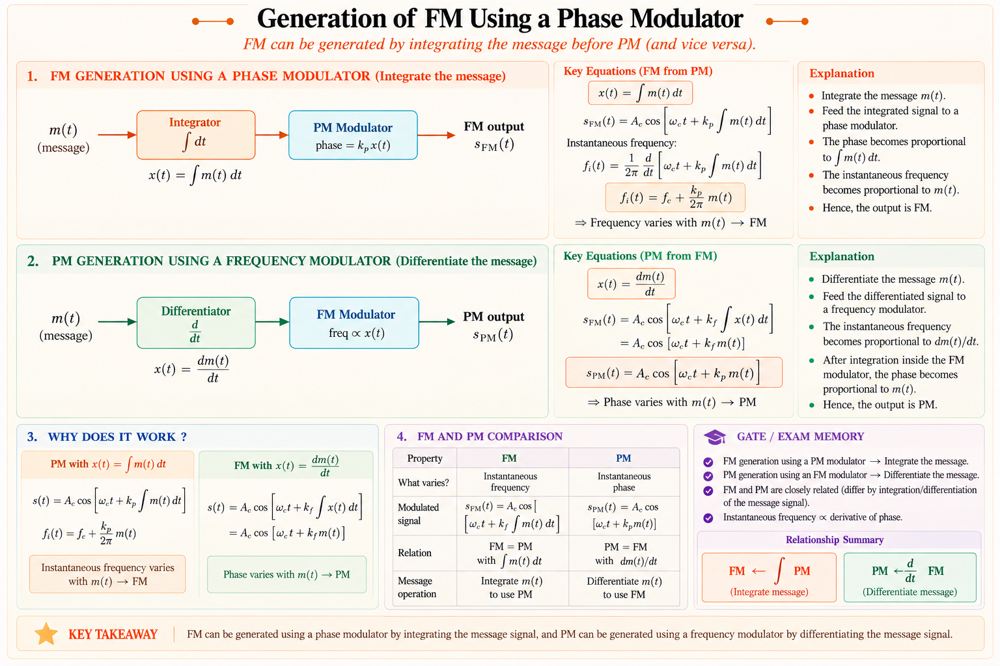
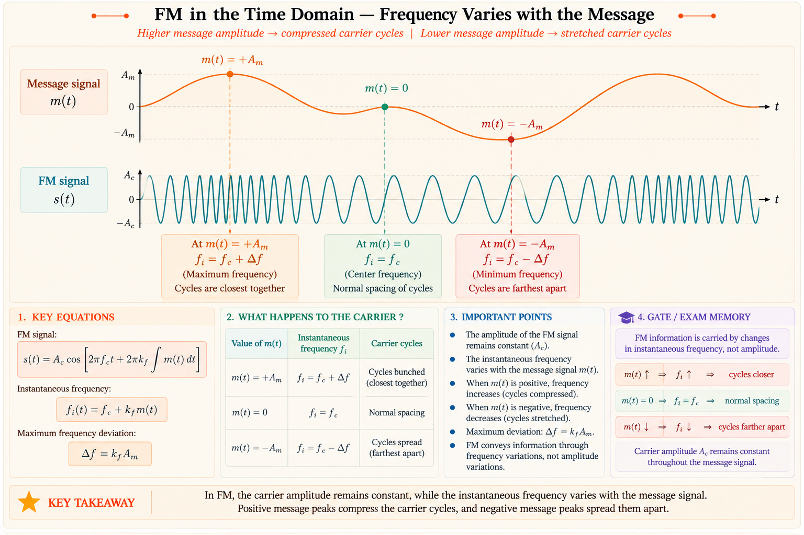
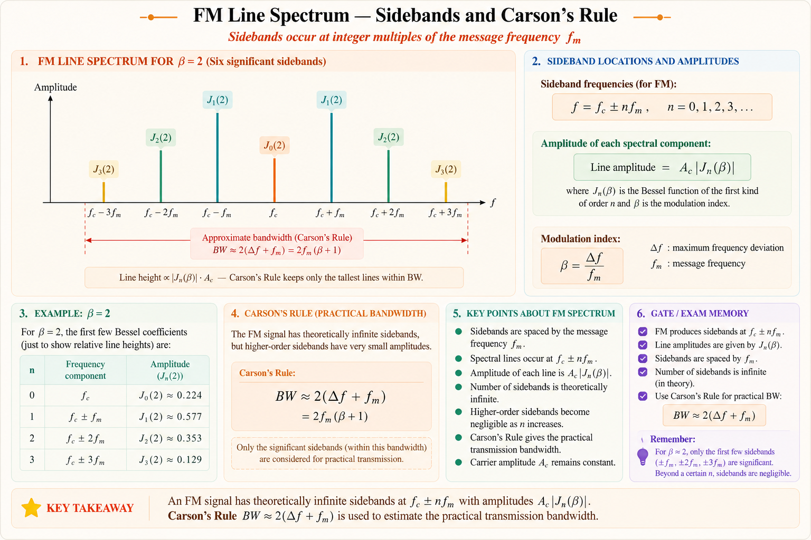
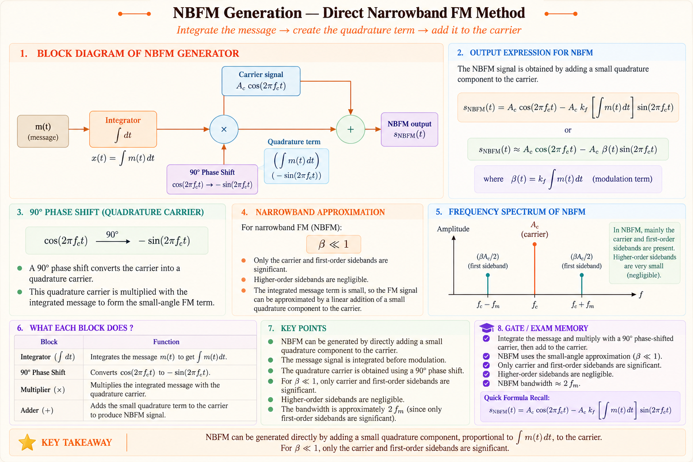
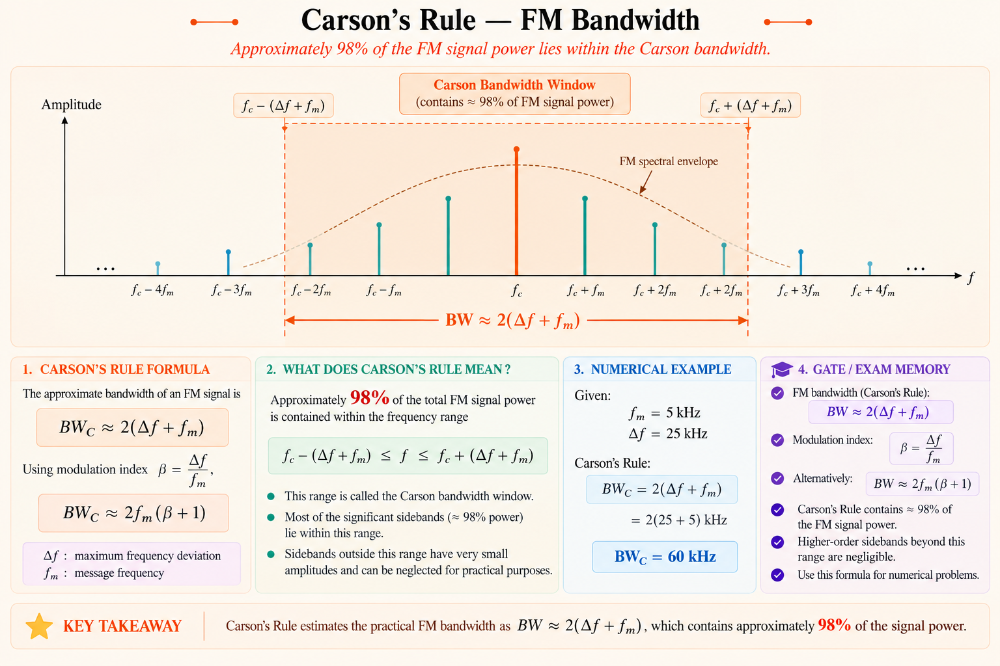
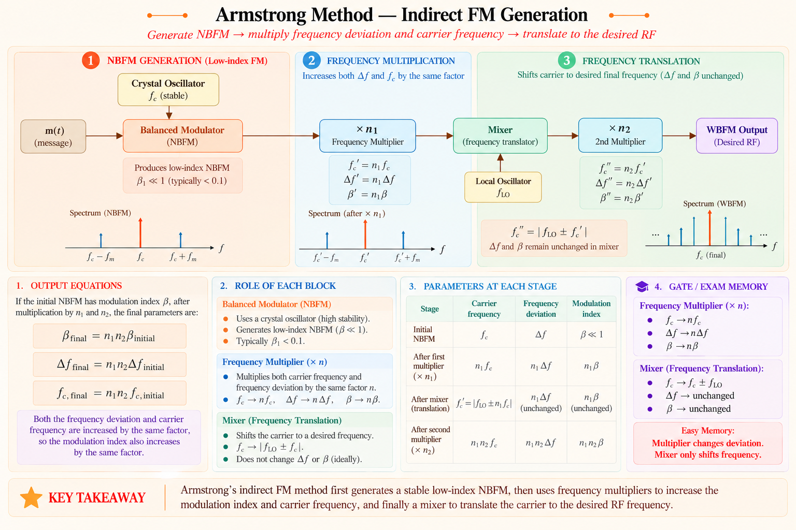
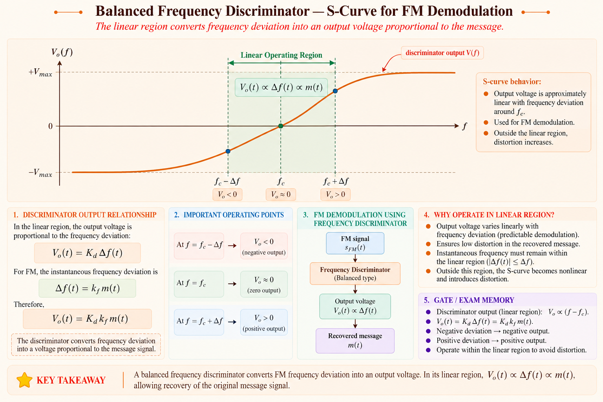

A complete deep-dive into Frequency Modulation and Phase Modulation — instantaneous
frequency, modulation index, Bessel-function spectra, Narrowband/Wideband FM, Carson's Rule for
bandwidth, FM generation and demodulation — everything needed for GATE EC, IES/ESE, and PSU
interviews.
GATE ECIES/ESEPSU InterviewACE Academy NotesCh. 7 — Angle Modulation
Course Progress
Ch 7 / 12
01
Big Picture — Why Angle Modulation?
💡
The Core Problem
Amplitude Modulation (AM) rides the message on the amplitude of a carrier.
Its weakness is that noise picked up during transmission also adds directly to the
amplitude, so AM receivers can never fully separate signal from noise. Angle
Modulation — Frequency Modulation (FM) and Phase Modulation (PM) — instead
embeds the message in the angle (phase) of the carrier, keeping the envelope
constant. A limiter at the receiver can then strip off amplitude noise entirely before
demodulation, giving FM its famous noise immunity.
Angle modulation was introduced by Edwin Armstrong in the 1930s specifically to defeat the static and
noise that plagued AM broadcast radio. Instead of varying \(A_c\), the carrier
\(s(t)=A_c\cos\theta(t)\) keeps its amplitude fixed and lets the message vary the total instantaneous
angle \(\theta(t)\). Depending on whether the message directly controls the phase or the frequency,
we get two closely related but distinct forms of angle modulation.
Where Angle Modulation Is Used
FM Broadcast Radio (88–108 MHz) — high-fidelity audio with excellent noise
immunity compared to AM broadcast.
Television Sound Channel — analog TV audio subcarriers use FM for the same
noise-rejection reason.
Mobile & Two-Way Radio — narrowband FM (NBFM) is standard for police,
aviation, and amateur radio voice links.
Phase-Locked Loops (PLLs) in ICs — PM/FM concepts underpin PLL-based frequency
synthesizers used in every modern transceiver.
Instrumentation & Telemetry — FM telemetry is preferred in high-noise
industrial and aerospace environments.
🔑
Connection to Other Subjects
Angle modulation connects directly to Signals & Systems (Fourier
spectra, Bessel series expansion), Random Processes (FM threshold and
capture effect), and Electronic Circuits (VCOs, PLLs, varactor diodes used
in FM generation).
02
Phase Modulation (PM) Fundamentals
In Phase Modulation, the message signal \(m(t)\) directly controls the instantaneous phase deviation
of the carrier, while the amplitude remains constant at \(A_c\).
Phase-Modulated Signal
\begin{align*}\boxed{s_{PM}(t) = A_c \cos\!\big(2\pi f_c t + k_p\, m(t)\big)}\end{align*}
where \(k_p\) is the phase sensitivity of the modulator, in radians per volt (units
of \(m(t)\) assumed volts).
Comparing this with the general angle-modulated carrier \(s(t) = A_c\cos\theta(t)\), we identify the
total instantaneous phase angle:
The instantaneous frequency is, by definition, the rate of change of phase divided by \(2\pi\):
Instantaneous Frequency (General Definition)
\begin{align*}f_i(t) = \frac{1}{2\pi}\frac{d\theta(t)}{dt}\end{align*}
For PM, differentiating \(\theta(t)\) shows that the instantaneous frequency deviates from \(f_c\) in
proportion to the derivative of the message, not the message itself:
Instantaneous Frequency for PM
\begin{align*}f_i(t) = f_c + \frac{k_p}{2\pi}\,\frac{dm(t)}{dt}\end{align*}
✅
Key Physical Understanding
In PM, a message that is changing rapidly (large \(dm/dt\)) produces a large
frequency deviation even if the message amplitude itself is small. A DC (constant) message
causes a constant phase shift but zero frequency deviation, because
\(dm/dt = 0\).
03
Frequency Modulation (FM) Fundamentals
In Frequency Modulation, the message signal directly controls the instantaneous
frequency of the carrier — this is the more commonly used form of angle modulation for
broadcast and communication.
Instantaneous Frequency for FM
\begin{align*}\boxed{f_i(t) = f_c + k_f\, m(t)}\end{align*}
where \(k_f\) is the frequency sensitivity of the modulator, in Hz per volt.
Since \(f_i(t) = \frac{1}{2\pi}\frac{d\theta(t)}{dt}\), the instantaneous phase is obtained by
integrating the instantaneous frequency deviation over time:
FM Signal — Time Domain Expression
\begin{align*}\theta(t) = 2\pi f_c t + 2\pi k_f \int_0^t m(\tau)\, d\tau\end{align*}
\begin{align*}\boxed{s_{FM}(t) = A_c \cos\!\left(2\pi f_c t + 2\pi k_f \int_0^t m(\tau)\,
d\tau\right)}\end{align*}
The PM ↔ FM Duality
FM and PM are mirror images of each other through calculus. This gives rise to a classic and highly
exam-relevant equivalence:

Figure 7.1 — FM can be generated by integrating the message and feeding it to a
phase modulator; PM can be generated by differentiating the message and feeding it to a
frequency modulator. This equivalence is exploited in Armstrong's indirect FM method.
⚠️
GATE Trap — Don't Confuse the Two
For a message \(m(t) = A_m\cos(2\pi f_m t)\): in PM, the frequency deviation
\(\propto f_m\) (increases with modulating frequency); in FM, the frequency
deviation is independent of \(f_m\) and depends only on \(A_m\). This distinction is
a very common one-mark GATE question.
04
Modulation Index & Instantaneous Frequency
Consider a single-tone message \(m(t) = A_m \cos(2\pi f_m t)\), the standard test signal used to
characterise an FM system.
Frequency Deviation
Instantaneous Frequency — Tone Modulation
\begin{align*}f_i(t) = f_c + k_f A_m \cos(2\pi f_m t) = f_c + \Delta f \cos(2\pi f_m t)\end{align*}
where \(\Delta f = k_f A_m\) is the peak frequency deviation — the maximum
departure of instantaneous frequency from the carrier.
Modulation Index β
FM Modulation Index (dimensionless)
\begin{align*}\boxed{\beta = \frac{\Delta f}{f_m}}\end{align*}
\(\beta\) equals the peak phase deviation in radians. It is the single most important parameter of
an FM system — it determines both bandwidth and spectral shape.
With this substitution, the tone-modulated FM signal takes its standard exam form:
Standard Tone-Modulated FM Signal
\begin{align*}s_{FM}(t) = A_c \cos\!\big(2\pi f_c t + \beta \sin(2\pi f_m t)\big)\end{align*}

Figure 7.2 — Time-domain picture of FM. The zero crossings of the carrier bunch
together when the message is at its positive peak (frequency rises to \(f_c+\Delta f\)) and
spread apart when the message is at its negative peak (frequency falls to \(f_c-\Delta f\)). The
envelope stays perfectly constant.
Modulation Index Comparison — FM vs PM
Quantity
Frequency Modulation
Phase Modulation
Instantaneous frequency
\(f_c + k_f m(t)\)
\(f_c + \dfrac{k_p}{2\pi}\dot m(t)\)
Peak deviation \(\Delta f\)
\(k_f A_m\)
\(\dfrac{k_p A_m f_m}{1}\) (∝ \(f_m\))
Modulation index
\(\beta = k_f A_m / f_m\) — falls as \(f_m\) ↑
\(\beta = k_p A_m\) — constant, independent of \(f_m\)
Peak phase deviation
\(\Delta\phi = \beta\) rad
\(\Delta\phi = k_p A_m\) rad
🔑
GATE One-Liner
In FM, \(\beta \propto 1/f_m\). In PM, \(\beta\) is
independent of \(f_m\). This single fact resolves most GATE questions
asking "what happens to modulation index if \(f_m\) is doubled."
05
FM Spectrum — Bessel Functions
Unlike AM, FM is a non-linear process — the spectrum of a tone-modulated FM signal
is not simply the message spectrum shifted to \(f_c\). Expanding
\(s_{FM}(t) = A_c\cos(2\pi f_c t + \beta\sin 2\pi f_m t)\) using the Jacobi–Anger identity gives an
infinite series of sidebands weighted by Bessel functions of the first kind.
FM Spectrum — Bessel Series Expansion
\begin{align*}\boxed{s_{FM}(t) = A_c \sum_{n=-\infty}^{\infty} J_n(\beta)\, \cos\!\big(2\pi (f_c +
n f_m)t\big)}\end{align*}
where \(J_n(\beta)\) is the Bessel function of the first kind, order \(n\), argument \(\beta\).
This means a single-tone FM signal theoretically contains an infinite number of sidebands
spaced \(f_m\) apart on either side of \(f_c\), with amplitudes \(A_c J_n(\beta)\).
Properties of Bessel Coefficients \(J_n(\beta)\)
Symmetry: \(J_{-n}(\beta) = (-1)^n J_n(\beta)\) — odd-order lower sidebands are
phase-inverted relative to the upper sideband.
Power conservation: \(\displaystyle\sum_{n=-\infty}^{\infty} J_n^2(\beta) = 1\)
for all \(\beta\) — total signal power is always \(A_c^2/2\), regardless of modulation.
Carrier term \(J_0(\beta)\): can become zero for specific
values of \(\beta\) (e.g. \(\beta \approx 2.405, 5.52, 8.65\ldots\)) — at these points the
carrier component vanishes entirely, a classic lab/GATE observation.
Significant sidebands: for a given \(\beta\), sidebands with \(J_n(\beta) <
0.01\) are considered negligible (contain <1% of the carrier amplitude) and are dropped.

Figure 7.3 — Discrete line spectrum of tone-modulated FM. Sidebands are
spaced exactly \(f_m\) apart; their heights follow \(J_n(\beta)\). Beyond a certain \(n\),
sideband amplitude becomes negligible.
Bessel Function Table (Selected Values)
β
J₀
J₁
J₂
J₃
J₄
J₅
Significant sidebands (n)
0.25
0.98
0.12
0.01
—
—
—
2
1.0
0.77
0.44
0.11
0.02
—
—
4
2.0
0.22
0.58
0.35
0.13
0.03
—
6
5.0
−0.18
−0.33
0.05
0.36
0.39
0.26
16
10.0
−0.25
0.04
0.25
0.06
−0.22
−0.23
28
⚠️
GATE Trap — Carrier Nulling
When \(J_0(\beta) = 0\) (e.g. \(\beta = 2.405\)), the FM signal contains no power at
\(f_c\) — all power is redistributed to the sidebands. This does not
mean the FM signal has vanished; it is a classic way examiners test whether students confuse
"carrier component power" with "total transmitted power."
06
Narrowband FM (NBFM)
When \(\beta \ll 1\) (typically \(\beta < 0.3\) rad), the FM signal behaves like a linear modulation
scheme and can be approximated in closed form — this is Narrowband FM.
Small-Angle Approximation
Starting from \(s_{FM}(t) = A_c\cos(2\pi f_c t)\cos(\beta\sin\omega_m t) - A_c\sin(2\pi f_c
t)\sin(\beta\sin\omega_m t)\), and using \(\cos x \approx 1\), \(\sin x \approx x\) for small
\(x = \beta\sin\omega_m t\):
NBFM has exactly one carrier and one pair of sidebands — structurally
identical in count to standard DSB-SC AM, with bandwidth \(BW \approx 2f_m\). The key
difference from AM is a 90° phase shift on the sidebands, which is what
makes the envelope only approximately constant (there is a small residual amplitude
variation and phase distortion at this approximation level).
NBFM Generator Block Diagram

Figure 7.4 — NBFM generator: message is integrated, multiplied with a 90°
phase-shifted carrier to form the quadrature sideband term, then added to the direct carrier
branch — implementing the small-angle NBFM approximation directly.
07
Wideband FM (WBFM) & Carson's Rule
When \(\beta \gg 1\) (broadcast FM typically uses \(\beta \approx 5\)), many sideband pairs carry
significant power and the small-angle approximation of Section 6 no longer applies — this is
Wideband FM.
Why FM Theoretically Has Infinite Bandwidth
The Bessel series expansion in Section 5 shows an FM signal, in principle, has an infinite number of
sidebands and hence infinite bandwidth. In practice, however, sidebands beyond a certain order carry
negligible energy (\(J_n(\beta) < 0.01\)), so a finite, effective bandwidth can be
defined that captures at least 98% of the total signal power.
Carson's Rule
Carson's Rule — Effective FM Bandwidth
\begin{align*}\boxed{BW \approx 2(\Delta f + f_m) = 2f_m(\beta + 1)}\end{align*}
Carson's Rule states the bandwidth is twice the sum of the peak frequency deviation and the highest
modulating frequency. It is derived empirically by noting that the number of significant sidebands
\(n_{sig} \approx \beta + 1\), so the bandwidth spans \(2 n_{sig} f_m = 2(\beta+1)f_m = 2(\Delta
f+f_m)\).

Figure 7.5 — Carson's Rule bandwidth window captures roughly 98% of FM signal
power, from \(f_c-(\Delta f+f_m)\) to \(f_c+(\Delta f+f_m)\).
NBFM vs WBFM — Comparison
Narrowband FM
▸β ≪ 1 (typically < 0.3 rad)
▸Only 1 carrier + 1 sideband pair significant
▸BW ≈ 2fm (same as AM)
▸Used in mobile/two-way radio voice links
Wideband FM
▸β ≫ 1 (broadcast FM: β ≈ 5)
▸Many significant sideband pairs (≈β+1)
▸BW ≈ 2(Δf+fm) by Carson's Rule
▸Used in FM broadcast radio (better SNR)
⚠️
GATE Trap — Standard Broadcast FM Numbers
Commercial FM broadcast uses \(\Delta f = 75\) kHz and \(f_m(\max) = 15\) kHz, giving
\(\beta = 5\) and \(BW = 2(75+15) = 180\) kHz. Standards round this up to a
200 kHz channel allocation — remember both the calculated 180 kHz
(Carson) and the allocated 200 kHz (with guard band) as they are asked interchangeably.
08
Power of an FM Signal
Because the envelope of an FM signal is always \(A_c\), regardless of the modulating message, its
total average transmitted power is constant and independent of the modulation
index — a major advantage over AM, where power varies with modulation depth.
Total Average Power of FM Signal
\begin{align*}\boxed{P_{FM} = \frac{A_c^2}{2}}\end{align*}
This follows directly from Parseval's relation applied to the Bessel expansion:
\(\dfrac{A_c^2}{2}\sum_n J_n^2(\beta) = \dfrac{A_c^2}{2}\), since \(\sum_n J_n^2(\beta)=1\) always.
🔑
Where Does the Power Go?
Modulation only redistributes power among the carrier and sidebands — it
never adds or removes total power. As \(\beta\) increases, power is transferred from the
carrier line \(J_0(\beta)\) into higher-order sidebands, but \(\sum J_n^2(\beta)\) always
sums to unity.
09
Generation of FM Signals
Two broad methods exist for generating an FM signal: Direct (varying the frequency
of an oscillator directly) and Indirect (Armstrong's method — generate NBFM, then
convert to WBFM using frequency multipliers).
Direct Method — Voltage-Controlled Oscillator (VCO)
A VCO uses the message voltage to vary a reactive element — classically a varactor
diode whose junction capacitance changes with reverse bias — inside an LC tank
oscillator, so the oscillation frequency directly tracks \(f_c + k_f m(t)\).
✅
Advantage & Drawback
Direct FM can achieve large frequency deviation easily, but the carrier
frequency \(f_c\) is not very stable because it depends on the same LC tank that is being
modulated. This is corrected using an auxiliary phase-locked-loop stabilisation circuit.
Indirect Method — Armstrong's Technique
To obtain a highly stable carrier frequency, Armstrong proposed generating a low-index NBFM signal
from a crystal-stable oscillator, then raising the modulation index using frequency multipliers
(which multiply both \(f_c\) and \(\Delta f\) by the same integer \(n\)).

Figure 7.6 — Armstrong indirect FM generator: a crystal-stable oscillator feeds
a balanced modulator producing low-index NBFM; frequency multipliers raise both \(\beta\) and
\(f_c\) by the same factor \(n\); a mixer (down-converter) then relocates the carrier to the
desired final frequency without altering the modulation index.
Effect of Frequency Multiplication (×n)
\begin{align*}f_{c,out} = n\, f_{c,in}, \qquad \Delta f_{out} = n\,\Delta f_{in}, \qquad \beta_{out} =
n\,\beta_{in}\end{align*}
Multiplication scales both carrier frequency and deviation by \(n\); a mixer
(heterodyning) then shifts \(f_c\) to the desired value without changing \(\Delta f\) or
\(\beta\), since mixing is a linear frequency-translation operation.
10
Demodulation of FM Signals
FM demodulation recovers the message by converting frequency variations back into amplitude (or
voltage) variations. All FM demodulators are, at heart, some form of frequency-to-amplitude
or frequency-to-voltage converter.
1. Slope Detector (Simplest Method)
An FM signal is passed through a tuned circuit whose resonance is offset from \(f_c\), so its
amplitude response has an approximately linear slope over the FM signal's frequency range. As
instantaneous frequency swings, the tuned circuit's output amplitude swings proportionally,
converting FM into AM, which is then envelope-detected.
2. Balanced (Foster–Seeley) Discriminator
Two slope detectors, tuned symmetrically above and below \(f_c\), are connected in a balanced
configuration so their outputs subtract. This cancels amplitude noise and gives a linear
S-shaped discriminator characteristic centred exactly on \(f_c\), with far better linearity than a
single slope detector.

Figure 7.7 — Balanced discriminator S-curve: output voltage is (approximately)
linearly proportional to instantaneous frequency deviation about \(f_c\), directly recovering
\(m(t)\).
3. Phase-Locked Loop (PLL) Demodulator
A PLL contains a VCO whose free-running frequency is \(f_c\), locked to the incoming FM signal by a
phase detector and loop filter. When locked, the VCO's control voltage must continuously replicate
the instantaneous frequency deviation of the input to keep tracking it — so the loop filter output
is the recovered message \(m(t)\). PLL demodulators dominate modern IC-based FM
receivers because they need no precision tuned circuits.
Slope Detector
▸Simplest, cheapest, poor linearity
▸Sensitive to amplitude noise
Foster–Seeley Discriminator
▸Balanced — cancels amplitude noise
▸Wide linear S-curve region
Ratio Detector
▸Similar to Foster–Seeley
▸Built-in AM (limiter-free) rejection
PLL Demodulator
▸IC-friendly, no tuned coils
▸Excellent linearity and threshold
💡
Why a Limiter Precedes the Discriminator
Before demodulation, FM receivers pass the signal through an amplitude limiter
(a hard clipper) that removes any amplitude fluctuations caused by channel noise or fading.
Since the message lives entirely in frequency/phase, clipping the amplitude to a constant
level does not destroy the information — this is the practical mechanism behind FM's superior
noise performance.
11
Numerical Examples
EXAMPLE 7.1Modulation Index and Bandwidth from Given Deviation
An FM signal has a peak frequency deviation of 50 kHz and the maximum
modulating frequency is 10 kHz. Find (a) the modulation index and (b) the bandwidth by
Carson's Rule.
KEYSince \(\beta=5 \gg 1\),
this is a wideband FM signal with roughly \(\beta+1 = 6\) significant sideband pairs.
EXAMPLE 7.2Standard Commercial FM Broadcast Bandwidth
A commercial FM broadcast station has a maximum frequency deviation of 75 kHz
and the highest audio modulating frequency is 15 kHz. Calculate the transmission bandwidth.
Solution
S1\(\beta = 75/15 =
\mathbf{5}\)
S2\(BW = 2(75+15) =
\mathbf{180 \text{ kHz}}\) (rounded up to a 200 kHz allocated channel with guard
band)
EXAMPLE 7.3Instantaneous Frequency and Deviation from s(t)
An FM signal is given by \(s(t) = 10\cos(2\pi \times 10^6 t + 4\sin(2\pi \times
1000\, t))\). Find the carrier frequency, modulating frequency, modulation index, and peak
frequency deviation.
Using the Bessel table, estimate how many significant sideband pairs (and hence
total spectral lines) exist for an FM signal with \(\beta = 2\).
Solution
S1From the Bessel table
(Section 5), for \(\beta=2\) the significant orders are \(n = 0,\pm1,\pm2,\pm3\) — 4
sideband pairs are significant.
S2Total spectral lines =
1 (carrier) + 2×4 (sidebands) = 9 lines, matching the Carson's-rule
estimate of \((\beta+1)=3\)-ish pairs on either side rounded to the nearest table
entry.
EXAMPLE 7.5Effect of Frequency Multiplication (Armstrong Method)
An NBFM signal with \(f_{c1} = 200\) kHz and \(\Delta f_1 = 25\) Hz is passed
through a chain of frequency multipliers with total multiplication factor 64, then
down-converted by a mixer with a local oscillator so that the final carrier is 100 MHz. Find
the final peak frequency deviation and modulation index for \(f_m = 5\) kHz.
S2Mixing changes only
\(f_c\), not \(\Delta f\): final \(\Delta f\) stays \(\mathbf{1.6\ kHz}\), final \(f_c =
\mathbf{100\ MHz}\) (given, set by mixer LO).
GATE ECModulation index from deviation and modulating frequencyClassic Pattern
An FM signal with a carrier frequency of 100 MHz has a peak frequency deviation of 8 kHz for
a maximum modulating frequency of 4 kHz. The modulation index is:
(a) 0.5
(b) 2 ✓
(c) 4
(d) 32
ANS: (b) — β = Δf/fm = 8/4 = 2
IESTransmission bandwidth of a WBFM signal (Carson's Rule)Classic Pattern
An FM signal has a peak deviation of 15 kHz and the modulating frequency is 3 kHz. Using
Carson's Rule, the approximate transmission bandwidth is:
(a) 15 kHz
(b) 18 kHz
(c) 36 kHz ✓
(d) 30 kHz
ANS: (c) — BW = 2(15+3) = 36 kHz
GATE ECEffect of doubling fm on β for FM vs PMConcept-Based
If the modulating frequency \(f_m\) of a tone-modulated signal is doubled while amplitude
\(A_m\) is kept constant, the modulation index of an FM system will:
(a) Reduce to half ✓
(b) Double
(c) Remain unchanged
(d) Quadruple
ANS: (a) — β_FM = kf·Am/fm ∝ 1/fm, so doubling fm halves β. (For PM,
β would remain unchanged since β_PM = kp·Am is independent of fm.)
IESPower of an FM signal vs modulation indexConcept-Based
The total average transmitted power of an FM signal, as the modulation index β is
increased from 0.5 to 5 (carrier amplitude \(A_c\) unchanged):
(a) Increases proportionally with β
(b) Decreases
(c) Remains constant at \(A_c^2/2\) ✓
(d) Becomes zero when \(J_0(\beta)=0\)
ANS: (c) — Σ Jn²(β) = 1 for any β, so total power A_c²/2 never
changes; only its distribution among carrier and sidebands changes.
GATE ECNumber of significant sidebands from Bessel tableClassic Pattern
For an FM signal with modulation index β = 1, using the Bessel function table, the number of
significant sideband pairs (amplitude > 1% of unmodulated carrier) is approximately:
IESPurpose of the limiter stage before an FM discriminatorConcept-Based
In an FM receiver, an amplitude limiter is placed immediately before the discriminator
primarily to:
(a) Increase the modulation index
(b) Remove amplitude variations caused by noise/fading ✓
(c) Increase transmission bandwidth
(d) Convert FM to PM
ANS: (b) — Since information is carried in frequency, hard-clipping
removes amplitude noise without losing the message, giving FM its noise-immunity
advantage.
GATE FOCUSHigh-Frequency Exam Topics in This Chapter
Carson's Rule bandwidth calculation
Modulation index β = Δf/fm and its behaviour vs fm for FM/PM
Bessel function spectrum — significant sidebands, carrier
nulling
FM signal power (independence from β)
Direct vs Indirect (Armstrong) FM generation, multiplier effect on β
and fc
FM demodulator types — slope detector, discriminator, PLL
Narrowband FM closed-form expansion
13
Memory Tricks & Quick Revision Sheet
Memory Mnemonics
🧠
Mnemonic — "FIB" for FM Facts
Frequency deviation \(\Delta f = k_f A_m\) |
Index \(\beta = \Delta f/f_m\) | Bandwidth
\(=2(\Delta f+f_m)\) by Carson's Rule — the three quantities always chain together.
🧠
Mnemonic — FM "Fights" fm, PM Doesn't
In FM, β Falls as fm rises (inverse relation). In
PM, β stays Put regardless of fm. "FM Falls, PM
Persists."
🧠
Mnemonic — Integrate to go PM→FM
"Integrate the message before phase-modulating to get FM" —
\(m(t) \xrightarrow{\int} \text{PM modulator} \to \text{FM}\). Reverse (differentiate) to go
the other way.
FM: β=kf·Am/fm (∝1/fm). PM: β=kp·Am (independent of fm).
🤖 Ask Aarova AI
Have a doubt about FM or PM? Ask anything — GATE concepts, numericals, or exam tips!
References & Citations
All technical content is derived
from the following standard textbooks and learning resources. All explanations, derivations,
diagrams, and examples are original to Aarova AI.
[1]Haykin, Simon, and Moher, Michael. Communication
Systems, 5th ed. Wiley. Chapter on Angle Modulation — instantaneous frequency,
Bessel spectrum, Carson's Rule.
[2]Lathi, B.P., and Ding, Zhi. Modern Digital and
Analog Communication Systems, 4th ed. Oxford University Press. Chapter on
Angle-Modulated Systems.
[3]Taub, Herbert, Schilling, Donald L., and Saha, Goutam.
Principles of Communication Systems, 3rd ed. Tata McGraw-Hill. Chapter on
Frequency Modulation — generation and detection circuits.
[4]Singh, R.P., and Sapre, S.D. Communication
Systems: Analog and Digital, 3rd ed. Tata McGraw-Hill. Chapter on Angle
Modulation.